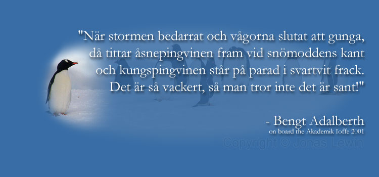

|
When people ask me how my trip to Antarctica was, my response is: "6 months too short". That's how great this trip was. I miss the boat, the waves, the wind, the penguins, the air, the zodiacs, the albatrosses, the guide, the bridge, my room mate, .... (I don't miss the fog). Here's a good summary in Swedish of what I (and Bengt of course) thought of the trip to Antarctica. I will of course not translate this poem. Either you know Swedish, or you don't.  |